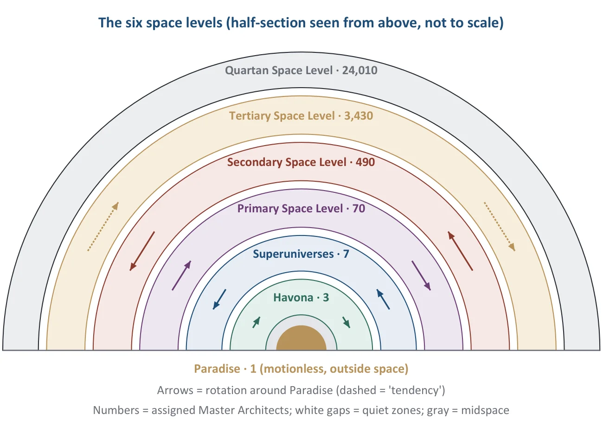

Original : Annexe III, Niveaux d’espace du maitre univers (p. 177–189)
Le maitre univers est édifié dans l’espace pénétré qui s’étend horizontalement à partir du Paradis, et cet espace est divisé en six niveaux d’espace. Sadler soutient d’abord que l’espace doit être considéré comme une réalité positive, puis expose les limites de l’espace, et marche ensuite vers l’extérieur depuis le bord du Paradis jusqu’à la lisière lointaine du niveau d’espace quaternaire, en vérifiant à chaque étape ce que le texte nous dit réellement. Enfin, il spécule sur les raisons pour lesquelles le Livre d’Urantia ne fait aucune mention de la théorie de la relativité, en considérant la question à la lumière de l’histoire des modèles cosmologiques.
Il y a l’espace non pénétré, qui s’étend au-dessus et au-dessous du Paradis, et l’espace pénétré, qui s’étend horizontalement ; entre eux se trouvent les zones d’espace intermédiaire, qui les séparent et finissent par les enfermer tous deux. Puisque tout le maitre univers surgit dans l’espace pénétré, Sadler emploie désormais « espace » au sens d’espace pénétré seulement.
C’est un don du Paradis. Nous croyons que l’espace du grand univers et celui de toutes les régions extérieures sont effectivement pénétrés par la puissance d’espace ancestrale de l’Absolu Non Qualifié.11:7.4
Nous avons tendance à concevoir l’espace comme le lieu où la masse et l’énergie « ne sont pas », mais le Livre d’Urantia traite l’espace comme une réalité positive.
Toutefois, l’espace est réel. Il contient et conditionne le mouvement. Il se meut même.12:4.7
Sadler rend la différence frappante en reformulant une loi familière. Dites que « la gravité s’affaiblit avec le carré de la distance », et l’espace se cache derrière le mot « distance ». Dites plutôt que « l’espace, en tant que réalité, agit sur la gravité et diminue sa force en proportion du carré de la distance », et l’espace s’avance comme le sujet de la phrase. L’espace est une condition qui parait vide, mais qui favorise le mouvement et même l’exige ; sa limite se trouve là où commence l’espace intermédiaire, qui résiste au mouvement.
L’espace du maitre univers est divisé en niveau d’espace de Havona, niveau d’espace des superunivers et quatre niveaux d’espace extérieur : les niveaux d’espace primaire, secondaire, tertiaire et quaternaire.
Un niveau d’espace fonctionne donc comme une région elliptique de mouvement entourée de tous côtés par une immobilité relative.11:7.8
Sadler compare un niveau d’espace à un « tube elliptique » qui favorise le mouvement, bordé sur les côtés par des zones de calme relatif et en haut et en bas par les zones d’espace intermédiaire. Le sens de rotation alterne d’un niveau au suivant.
Ce zonage alterné du maitre univers, associé au flux alterné des galaxies dans le sens des aiguilles d’une montre et en sens inverse, est un facteur de stabilisation de la gravité physique destiné à empêcher que la pression de gravité ne s’accentue au point où elle produirait un effet de désagrégation et de dispersion.11:7.9
Sadler relie cet effet d’équilibre à l’œuvre de l’Absolu Universel, source de mouvements compensateurs qui égalisent les tensions créées par d’autres mouvements. Les limites de l’espace peuvent se résumer selon quatre directions. La lisière intérieure se trouve près du Paradis, mais ne touche pas directement l’Ile. En haut et en bas, les zones d’espace intermédiaire la ferment. Entre un niveau et le suivant se trouvent des zones de quiétude libres de poussière stellaire ; celle qui sépare les superunivers du niveau primaire a en moyenne une largeur d’environ quatre-cent-mille années-lumière [12:1.14]. La lisière extérieure s’étend au-delà du maitre univers, mais nul ne sait jusqu’où.
Sadler trouve ce qui unit les six niveaux dans la présence de Dieu l’Ultime en émergence.
L’Ultime est présent dans l’espace, ou le sera ultérieurement, jusqu’aux bordures extérieures du quatrième niveau d’espace extérieur.12:6.13
De même que la présence spatiale d’un Esprit Créatif délimite l’étendue d’un univers local, la présence spatiale de l’Ultime délimite l’étendue du maitre univers. La supervision des Maitres Architectes, elle aussi, commence au Paradis et s’achève au bord extérieur du niveau le plus extérieur. Partons maintenant du Paradis périphérique, traversons l’espace intermédiaire et la lisière intérieure de l’espace effectif, et marchons vers l’extérieur.
Havona compte en tout douze circuits : trois de satellites, sept du milliard de mondes et deux ceintures de corps de gravité obscurs. Les dix circuits intérieurs tournent dans le sens des aiguilles d’une montre ; parmi les corps de gravité obscurs, la ceinture intérieure se meut dans le sens inverse des aiguilles d’une montre et la ceinture extérieure dans le sens des aiguilles d’une montre. Les corps de gravité obscurs sont une sorte unique de matière, ni triata ni gravita, et, en raison de leur masse, l’univers central pèse plus lourd que les sept superunivers réunis [12:1.10].
Les sept superunivers tournent dans le sens inverse des aiguilles d’une montre et se partagent le niveau d’espace des superunivers. Notre Orvonton correspond à peu près à la Voie Lactée des astronomes et est divisé en dix secteurs majeurs, chacun comptant cent secteurs mineurs. Le centre de notre secteur mineur se trouve dans le nuage stellaire du Sagittaire. Le texte rapporte que le système habité le plus éloigné se trouve à un peu moins de deux-cent-cinquante-mille années-lumière du centre du superunivers [32:2.11], et, sur cette base, Sadler estime le diamètre d’Orvonton à environ un demi-million d’années-lumière.
Les niveaux d’espace extérieur ne sont encore ni organisés ni habités. On croit que les finalitaires sont destinés à y servir, et l’organisation de ces régions marquera le commencement d’une approche transcendantale et subabsolue de Dieu [0:8.12]. Le texte dit que de nouveaux télescopes révèleront quelque 375 millions de galaxies dans l’espace extérieur [12:2.3], et il dit aussi ceci :
On croit de plus en plus dans tout Uversa que les Corps de la Finalité en voie de rassemblement sont destinés à quelque service futur dans les univers de l’espace extérieur où nous pouvons déjà identifier le groupement d’au moins soixante-dix-mille agrégats de matière dont chacun est plus grand que n’importe quel superunivers du temps présent.31:10.19
Sadler considère que les deux affirmations décrivent la même réalité : les 375 millions de galaxies en cours d’organisation en soixante-dix-mille agrégats sur le niveau d’espace primaire. Les niveaux plus lointains, pense-t-il, sont cachés à nos télescopes par la poussière cosmique.
Mais, à environ un demi-million d’années-lumière au-delà de la périphérie du présent grand univers, nous observons les débuts d’une zone d’activité énergétique incroyable dont le volume et l’intensité croissent sur une distance de plus de vingt-cinq-millions d’années-lumière.12:1.14
Le calcul de Sadler se déroule ainsi. Si l’action énergétique s’intensifie sur plus de vingt-cinq millions d’années-lumière, elle s’affaiblit vraisemblablement de nouveau sur une distance semblable, de sorte que le niveau primaire aurait environ cinquante millions d’années-lumière de largeur, cent fois la largeur du niveau des superunivers. Si chacun des soixante-dix-mille agrégats est plus grand qu’un superunivers, alors le niveau primaire surpasse déjà en masse les sept superunivers réunis d’un facteur supérieur à dix mille (70 000 ÷ 7). Sur le niveau secondaire, des signes avant-coureurs de force ont été détectés à plus de cinquante millions d’années-lumière au-delà des phénomènes du niveau primaire [12:1.15]. Sur le niveau tertiaire, on a commencé à percevoir une tendance à la rotation dans le sens des aiguilles d’une montre, tandis que du niveau quaternaire on ne sait rien, sinon qu’il existe. Sadler estime que le niveau quaternaire est encore physiquement tout à fait en sommeil.

| Niveau d’espace | Rotation | Maitres Architectes | Ce que nous dit le texte |
|---|---|---|---|
| (Paradis) | Immobile | 1 | Hors de l’espace ; coordonne les vingt-et-un satellites |
| Havona | Sens des aiguilles d’une montre (dix circuits intérieurs) | 3 | Douze circuits ; masse supérieure à celle de tous les superunivers |
| Superunivers | Sens inverse des aiguilles d’une montre | 7 | Sept superunivers ; univers évolutionnaires |
| Niveau d’espace primaire | Sens des aiguilles d’une montre | 70 | Soixante-dix-mille agrégats de matière ; action énergétique sur plus de 25 millions d’années-lumière |
| Niveau d’espace secondaire | Sens inverse des aiguilles d’une montre | 490 | Signes de force au-delà de 50 millions d’années-lumière |
| Niveau d’espace tertiaire | Sens des aiguilles d’une montre (tendance) | 3 430 | Tendance rotatoire détectée |
| Niveau d’espace quaternaire | — | 24 010 | Seule son existence est mentionnée |
La multiplication par sept du nombre d’Architectes d’un niveau extérieur au suivant est un indice de plus de l’échelle relative des niveaux. Si l’on se tenait au bord extérieur du niveau quaternaire et que l’on « regardait » vers l’extérieur, on verrait un espace vide sans fin : la région au-delà du maitre univers. Sadler croit que les Maitres Architectes comprennent comment le maitre univers est relié à quelque chose de plus grand qui se trouve au-delà de lui.
L’espace lui-même n’est qu’une condition ultime, une condition de qualification à l’intérieur de l’absoluité relative des zones tranquilles d’espace intermédiaire.106:7.7
Sadler cite la présence spatiale de l’Ultime en 12:6.3, mais l’affirmation se trouve en réalité en 12:6.13 ; de même, les cinquante millions d’années-lumière du niveau secondaire se trouvent en 12:1.15, et non en 12:1.14. L’original donne pour le niveau tertiaire 3 420 Architectes, alors que le texte en indique 3 430 [31:9.8], et seul ce dernier chiffre fait que les sept groupes totalisent 28 011. La distance que Sadler utilise comme rayon d’Orvonton est, à strictement parler, la distance entre les systèmes habités les plus éloignés et le centre. La largeur et la masse du niveau primaire sont des estimations de Sadler tirées du texte.
Sadler observe que le Livre d’Urantia s’abstient rigoureusement de mentionner la théorie de la relativité et dépeint la géographie du maitre univers en termes newtoniens. Il conjecture deux raisons. L’une est l’intelligibilité : un texte écrit pour des lecteurs ordinaires doit transmettre son sens par des mots plutôt que par des symboles mathématiques. L’autre concerne l’ampleur de l’erreur : les concepts de Newton comportent peut-être « moins de distorsion » que ceux d’Einstein. La conviction personnelle de Sadler est que les deux raisons ont joué.
| Représentation du monde | Centre | Appréciation de Sadler |
|---|---|---|
| Géocentrique | Notre monde | Naturelle pour les sens, mais il fallait expliquer de force le mouvement rétrograde des planètes |
| Héliocentrique | Notre soleil | Les orbites circulaires ne concordaient pas jusqu’à ce que les orbites elliptiques simplifient tout |
| Acentrique | Aucun | Inévitable, puisque la science ne peut inférer une Ile immobile ; la théorie de la relativité appartient à cette catégorie |
| Centrée sur le Paradis | L’Ile immobile | Ayant un centre, elle permet le mouvement absolu |
Sadler remarque que chaque représentation du monde a eu son propre « phlogistique », une rationalisation imaginée pour couvrir des faits qui ne cadraient pas. La théorie de la relativité, soupçonne-t-il, en porte des traces et pourrait s’effondrer dans les régions lointaines du maitre univers ; il cite l’objection d’un astronome de son temps, ainsi que l’affirmation du texte selon laquelle l’espace pourrait finir par neutraliser la gravité linéaire. Mieux vaut y voir l’opinion personnelle de Sadler sur un débat scientifique de son époque.
La représentation du monde du Livre d’Urantia a un centre. La procession alternée des niveaux d’espace est un mouvement absolu, mesuré par rapport à l’Ile immobile du Paradis.
3. Les mouvements relatifs — relatifs en ce sens qu’ils ne sont pas évalués en prenant le Paradis comme point de base. Les mouvements primaire et secondaire sont absolus, ils sont le mouvement par rapport au Paradis immobile.12:4.10
Au sens le plus large, peut-être, l’univers centré de Newton déforme-t-il moins les faits que l’univers sans centre d’Einstein. Telle est la question que Sadler laisse à ses lecteurs.